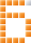

Мини-игры.
Свой рейтинг.
Семь игр в одном месте: Змейка, Тетрис, Block Blast, 2048, Башня, Мост и Цепочка. Играйте, копите очки и поднимайтесь в таблице лидеров.
Начать играть
Здесь не нужно ничего устанавливать. Выбираете игру, набираете очки и сравниваете результат с другими игроками. Лучшие места попадают в рейтинг профиля.
Как начать
Играйте
Игра запускается прямо в браузере, без скачивания.
Следите за рейтингом
Создайте профиль, и лучший результат сохранится в нём вместе с вашим местом.
Игры
Все игрыЗмейка
Собирайте еду, растите и не врезайтесь в стены и в собственный хвост.
Тетрис
Складывайте фигуры в линии. Чем выше скорость, тем больше очков.
Block Blast
Ставьте блоки на поле и очищайте строки и столбцы.
2048
Сдвигайте плитки и объединяйте одинаковые числа до 2048.
Башня
Ставьте блоки точно друг на друга и стройте башню как можно выше.
Мост
Зажмите, чтобы мост вырос, и отпустите — он должен дотянуться до следующей площадки.
Цепочка
Запустите один взрыв так, чтобы он задел как можно больше шариков.
Займите место в рейтинге
Выберите игру, поставьте рекорд и поднимитесь в таблице лидеров.
Начать играть